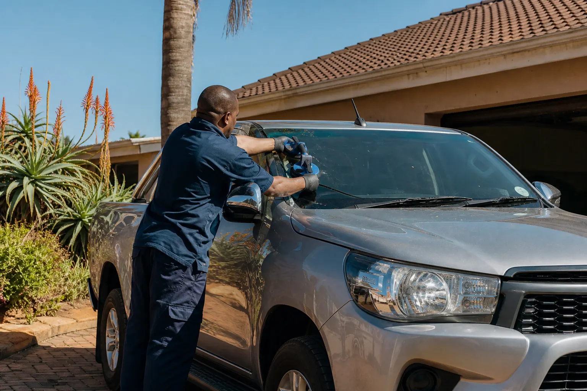
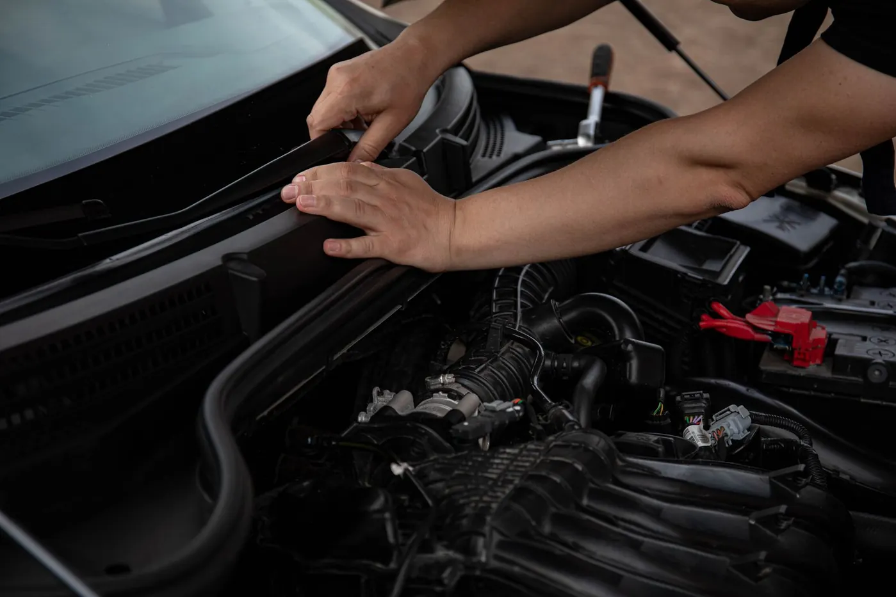
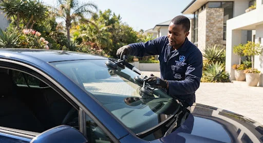
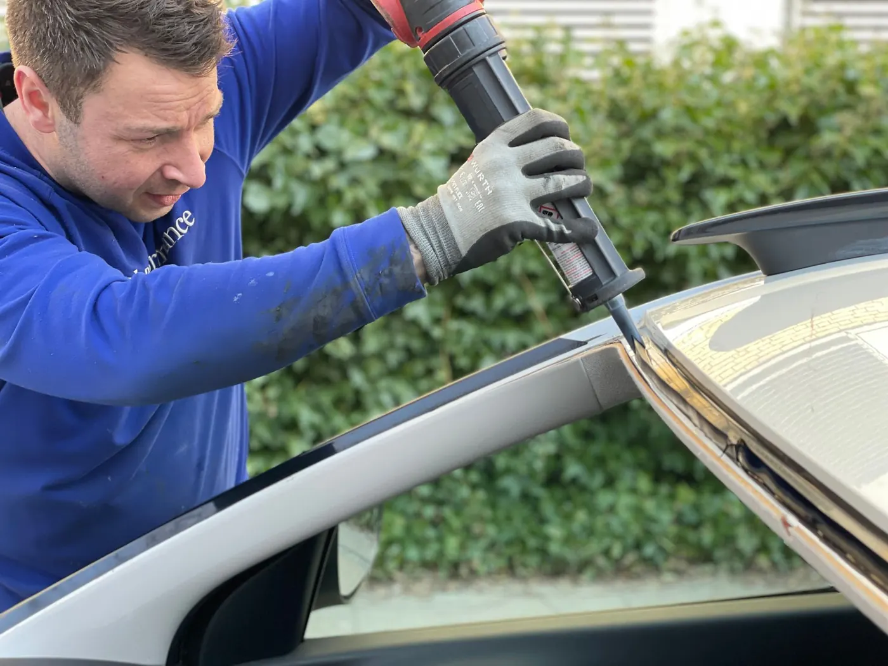
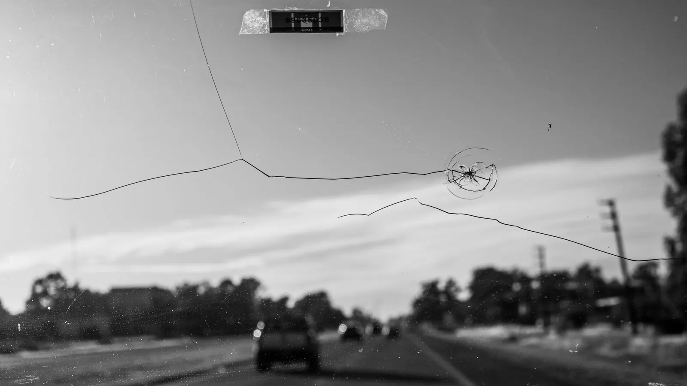

Yellow metal
Plant and construction
Excavators, TLBs, loaders and other equipment that cannot visit a passenger-car workshop.

Windscreen Doctor · Mobile replacement
We replace the windscreen. We come to you. Yellow metal, luxury cars, passenger vehicles and bakkies — seven days a week, across South Africa.
Any vehicle
This site is windscreen replacement — not a chip-versus-crack menu. If it has a windscreen, send a photo. We quote for new glass and come to the vehicle.
Yellow metal
Excavators, TLBs, loaders and other equipment that cannot visit a passenger-car workshop.

Luxury
Correct glass for the vehicle, including cameras and sensors where they apply.
Passenger
Everyday passenger glass, replaced at home, work or a suitable site.

Bakkies
Work vehicles that need to stay in service, including outside the metros.
Send a photo of the vehicle or machine. We quote for replacement.

Four clear stages. No guessing, no unnecessary back-and-forth.
Provide vehicle or machine details and a clear image of the damage. A whole-windscreen shot plus a close-up is ideal.
We identify the glass and confirm a replacement price for that vehicle, bakkie or yellow-metal unit.
Seven days a week. Choose a suitable appointment around the vehicle’s location.
Replacement is completed at the agreed location where suitable — metro, town or site.
A guided replacement quote. Only the details needed to identify the glass and get to you.
A modern windscreen is not only a window. It can interact with cameras, sensors, rain and light systems, driver-assistance technology and the vehicle structure.
Some vehicles may require calibration or additional procedures after replacement. We’ll advise where this applies. Windscreen Doctor does not currently claim to perform ADAS calibration in-house.


Specialist mobile fitment. Clear process. Honest limits.
The glass specification depends on the vehicle year, make, model and fitted features. Those details come first.
Trim, bonding surfaces and the opening need to be prepared before new glass is set.
The windscreen is matched to the vehicle. Confirm the exact glass grade with the quotation — this prototype does not publish unverified OEM or certification claims.
After replacement, follow the technician’s safe-drive-away guidance. Conditions affect curing time.
We work with insurers. Cover and excess still depend on the policy — confirm glass cover with yours. We can quote either way. Insurer names will be published once confirmed.
 JHB / Pretoria
Cape Town
Durban
Gqeberha
Bloemfontein
Upington
JHB / Pretoria
Cape Town
Durban
Gqeberha
Bloemfontein
Upington
The metros already have fitment chains. The opportunity is also Upington, a site 20 km outside town, and every other place a vehicle or yellow-metal unit cannot easily travel from. Tell us where it is — we confirm before we travel.
Check My TownContent slot
No customer quotes have been published yet. When Google reviews or written testimonials are confirmed, they will appear as a large editorial excerpt — not invented star cards.
Guides
Practical notes on mobile replacement, coverage and yellow metal. Browse the blog.

Chips, spreading cracks, edge damage and shattered glass.
A damaged windscreen is stressful. Getting it replaced should not be.
Browse all FAQsAny kind with a windscreen: yellow metal and plant, luxury cars, passenger vehicles and bakkies. Send the make, model and a photo so the correct glass can be identified.
Yes — that is the model. Metros, towns and outlying sites. Tell us the location and we confirm technician and glass availability before travelling.
Yes. Replacement appointments can be arranged seven days a week, subject to the location and the glass required.
Yes, we work with insurers. Cover and excess still depend on the policy, so confirm glass cover with yours. We can quote either way. Specific insurer names will be listed once they are confirmed for publication.
Pricing depends on the vehicle or machine year, make, model and windscreen specification. Submit those details for a relevant quotation.
Some vehicles require camera recalibration after windscreen replacement. Include the year, make and model so the requirement can be identified before booking. We will advise where calibration applies; we do not currently claim to perform it in-house.
No. This site is windscreen replacement only. Chip or crack repair is a different service and is not offered here. Damaged glass is quoted for replacement.